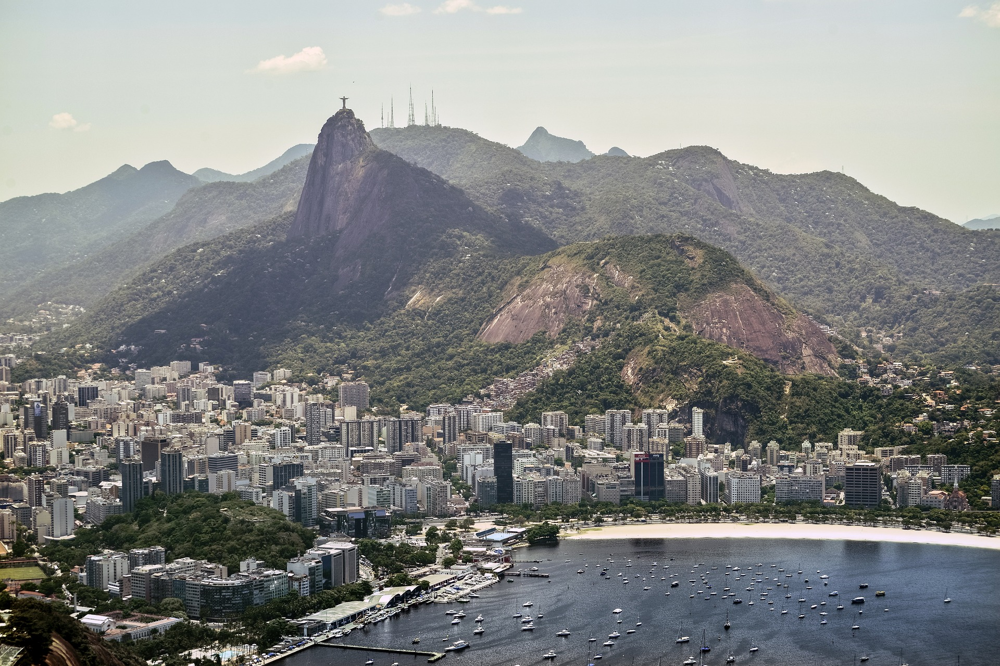
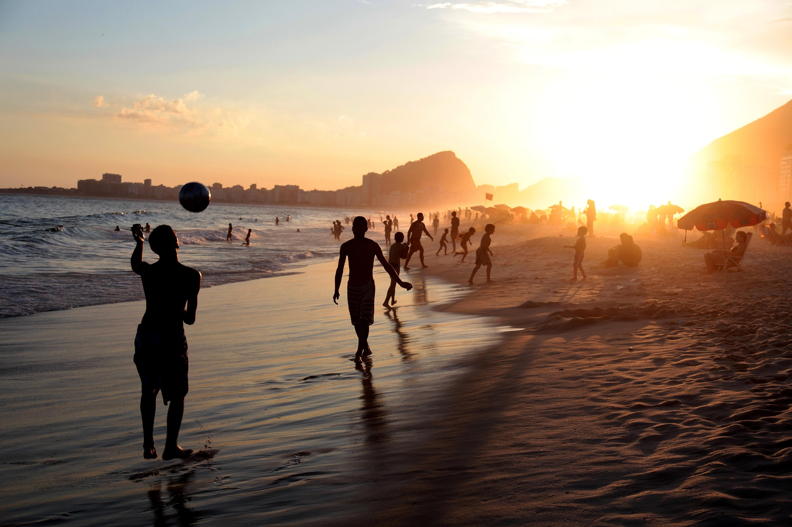
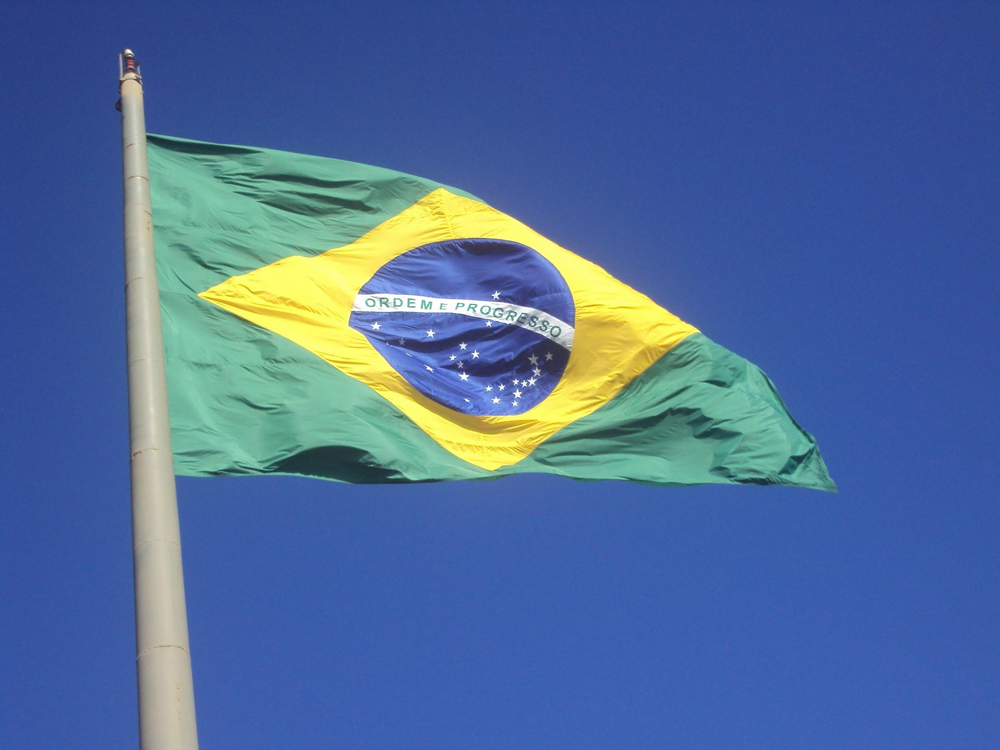

Brazil
Basic information
Quick Facts
Population: ~212 million
Capital: Brasília
Official languages: Portuguese
Size: 8,515,767 km²
Currency: Brazilian real (BRL)
Time-zone: Multiple time zones (UTC−2 to UTC−5)
Location: Eastern South America, bordered by every South American country except Chile and Ecuador.


Landscapes & Locations
Brazil consists of tropical rainforests, highlands, wetlands, mountains, and extensive coastal plains. The Amazon Basin dominates much of the north.
Notable Sightseeing Locations: Christ the Redeemer, Iguazu Falls, Amazon Rainforest, Sugarloaf Mountain
Cultural heritage
A Mosaic of Cultures
Brazilian culture is shaped by Indigenous, African, Portuguese, and immigrant influences, creating a rich and diverse national identity expressed through art, cuisine, and religion.

Carnival & Music
Rhythm and Celebration
Brazil is world-renowned for its music traditions — samba, bossa nova, and forró — and for the Rio Carnival, one of the largest and most vibrant festivals on Earth.
Music is woven into everyday life, from street corners to concert halls, reflecting the country's joyful and expressive character.